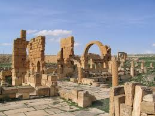
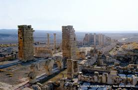

Kasserine
Kasserine – Entre montagnes majestueuses et héritage millénaire
À propos de Kasserine
Le gouvernorat de Kasserine est l'un des vingt-quatre gouvernorats de la Tunisie, situé dans la partie centre-ouest du pays. La capitale est la ville de Kasserine, qui se trouve au pied du Djebel Chambi, la plus haute montagne de Tunisie. La région est connue pour son histoire riche et son patrimoine archéologique important.
Emplacement
Le gouvernorat de Kasserine est situé dans l'ouest-central de la Tunisie, à la frontière avec l'Algérie. Il est entouré par plusieurs autres gouvernorats, dont ceux de Sidi Bouzid et Siliana. Il couvre une superficie de 8 260 km².
Histoire
L'histoire de Kasserine remonte à l'Antiquité, avec la présence de la ville romaine de Cillium (Kasserine) et de Sufetula (Sbeitla) à proximité. La région a été le théâtre de la bataille du col de Kasserine en février 1943, une confrontation majeure de la Seconde Guerre mondiale entre les forces alliées et l'Axe dirigé par Erwin Rommel. Le patrimoine de la région fait l'objet de publications et d'initiatives visant sa valorisation.
Caractéristiques
- Géographie : La région est dominée par le massif de l'Atlas tunisien, notamment le Djebel Chambi, le plus haut sommet de Tunisie.
- Patrimoine Archéologique : Kasserine est une région prioritaire pour les sites culturels et naturels, incluant les ruines de Sbeitla, un site archéologique romain exceptionnel.
- Économie : Le développement économique du centre-ouest, incluant Kasserine, fait l'objet d'études et de plans de développement.
- Culture : La région possède une identité culturelle forte, et ses spécificités linguistiques sont étudiées par les linguistes.
Top Places à Visiter
1.Site archeologique se Sbeitla
Un site romain exceptionnellement bien préservé et l'un des plus importants de Tunisie. Ne manquez pas les temples du forum (dédiés à Jupiter, Junon et Minerve) et l'Arc de Dioclétien.
.jpg)
.jpg)
.jpg)
2.Parc national de Djebel Chambi
Situé autour du Djebel Chambi, ce parc offre des possibilités de randonnée et un aperçu de la nature préservée de la région.
.jpg)
.jpg)
.jpg)
.jpg)
3.Ruines D'Haïdra
Autre site archéologique important dans le gouvernorat, connu pour sa forteresse byzantine et un grand arc de triomphe.


.jpg)
- Tiktak Chef Kassérine: Situé au Centre commercial Ezzahra, ce restaurant offre une cuisine méditerranéenne dans une ambiance décontractée.
- Restaurant La Terrasse: Apprécié pour son service chaleureux et ses plats délicieux. Le restaurant est ouvert 24h/24 certains jours et propose un cadre propre et agréable.
- Paradise Club Sbeitla : un lieu unique qui combine détente, gastronomie et célébration au cœur de Sbeitla, offre un cadre exceptionnel, moderne et chaleureux.
- The Castle Shop : The Castle Coffee Shop : Bénéficiant d'une excellente note, cet établissement est apprécié pour son service remarquable, offre une ambiance décontractée et confortable, avec des options de petit-déjeuner et de déjeuner, ainsi que des places assises en extérieur.
- The Twins Coffee : Ouvert 24h/24, ce café est reconnu pour son atmosphère calme et propre, idéale pour les groupes et les familles.
- The Diesel : The Diesel est un autre choix populaire pour ceux qui souhaitent prendre un verre sur place.